Reinforcement Learning Enables Scaling Generalist Robot Policy Improvement
Author affiliations
- 1 ETH Zurich
- 2 Max Planck Institute for Intelligent Systems, Tübingen
- 3 Technical University of Munich
- 4 University of Warsaw
- 5 Nomagic
- 6 Carnegie Mellon University
- 7 University of California, Berkeley
- 8 Microsoft
- 9 Amazon FAR
- 10 Physical Intelligence
TL;DR
Post-training of generalist policies often specializes them to a narrow set of tasks and reduces performance elsewhere. We study whether learning from experience across diverse tasks can improve a single policy on both its training tasks and related tasks it has not seen during post-training.
We show that with a sufficiently broad task distribution, critic-guided reinforcement learning (BON, OGPO) improves performance on unseen scenes and objects in MolmoSpaces. Filtered supervised fine-tuning (FSFT) also improves training-task performance, but generalizes less reliably. Our results identify task diversity and value learning as key ingredients for generalist policy improvement.

Setup

Separate task improvement from generalization
MolmoSpaces lets us vary two axes of task diversity: the object to manipulate and the scene it appears in. We scale from 1 to 144 training tasks and evaluate transfer to unseen scenes and unseen objects.
Training tasks
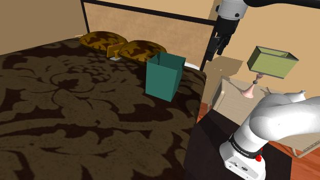
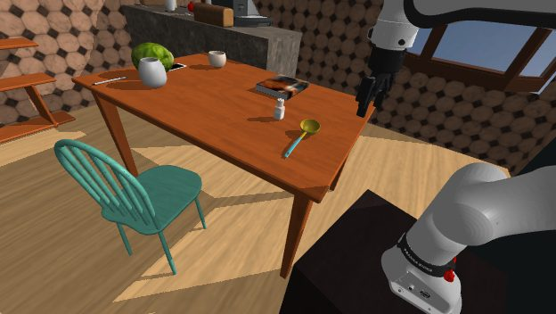
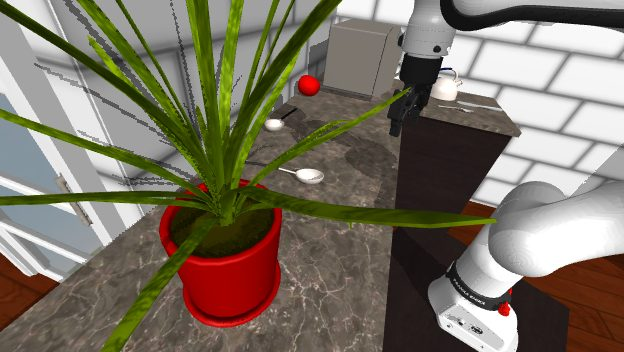
Unseen scenes
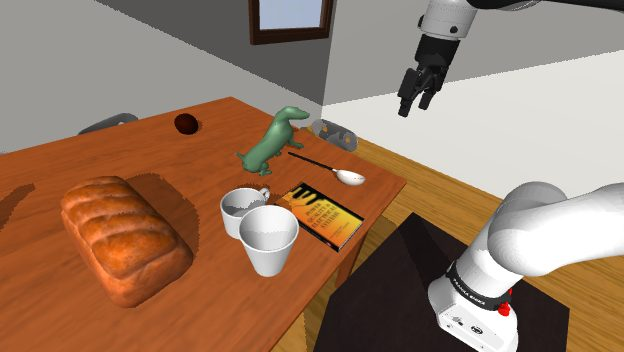
Unseen objects
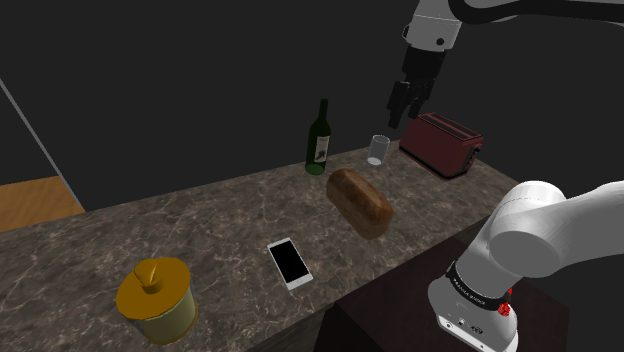
Results
The first examples of generalization in RL post-training of robot foundation models
Single-task post-training generally leads to forgetting — while we can improve on the task we train on, performance degrades on others. However, as we scale the number of training tasks, critic-based recipes (OGPO and BoN) exhibit a transition from forgetting to generalization. We observe performance gains over the base policy of up to +?? pp for unseen scenes and +?? pp for unseen objects.

What kind of diversity matters?
Diversifying scenes helps generalize to new scenes and diversifying objects helps generalize to new objects. Only scaling object diversity surpasses the base policy on both axes in this comparison.
To achieve generalization to novel manipulation strategies, it is necessary to train on tasks requiring a diversity of manipulation behaviors, and doing so can transfer to robustness over the scene layout and appearance.

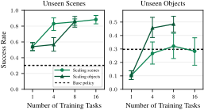
Transfer to unseen objects
Scaling from 64 to 144 training tasks introduces four additional object categories:
Added training categories
- Salt shaker
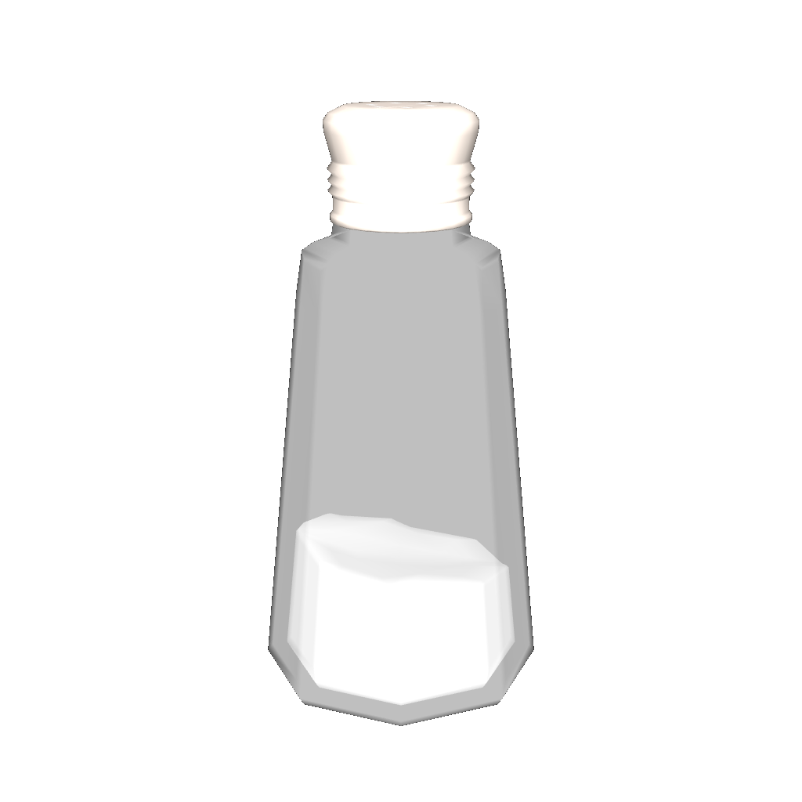
- Soap dispenser
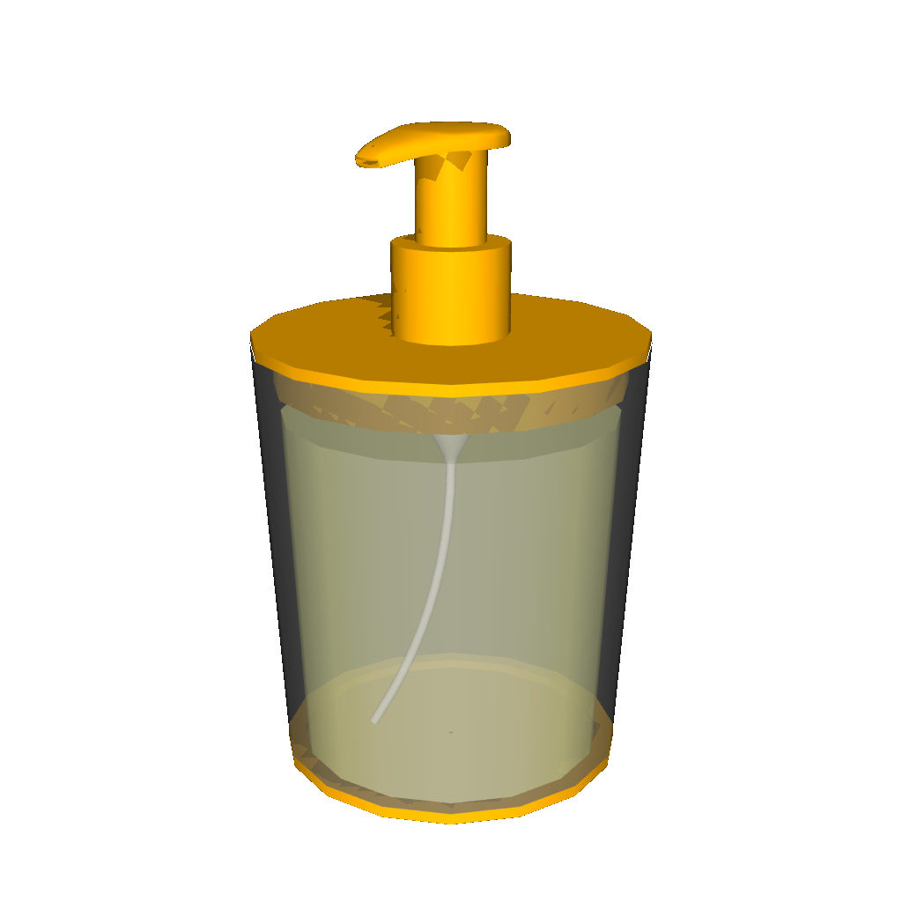
- Mug
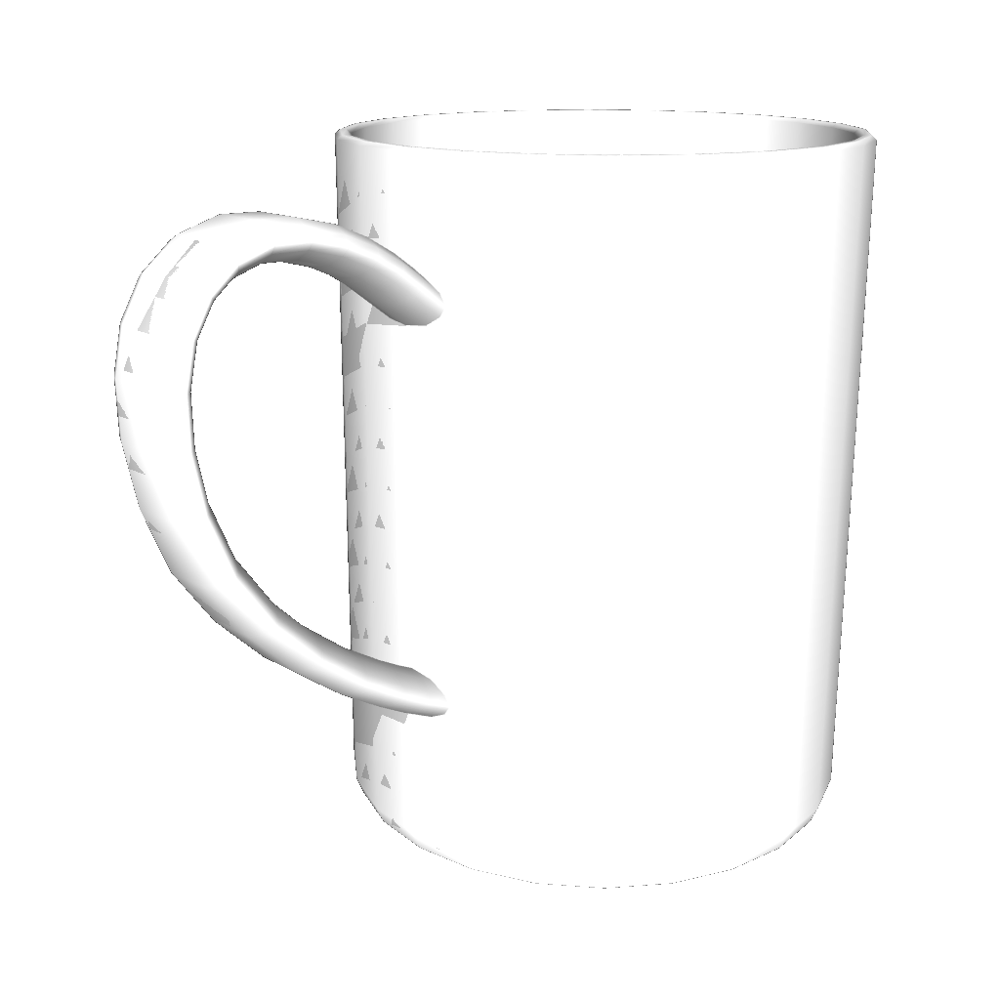
- Fruit & vegetables
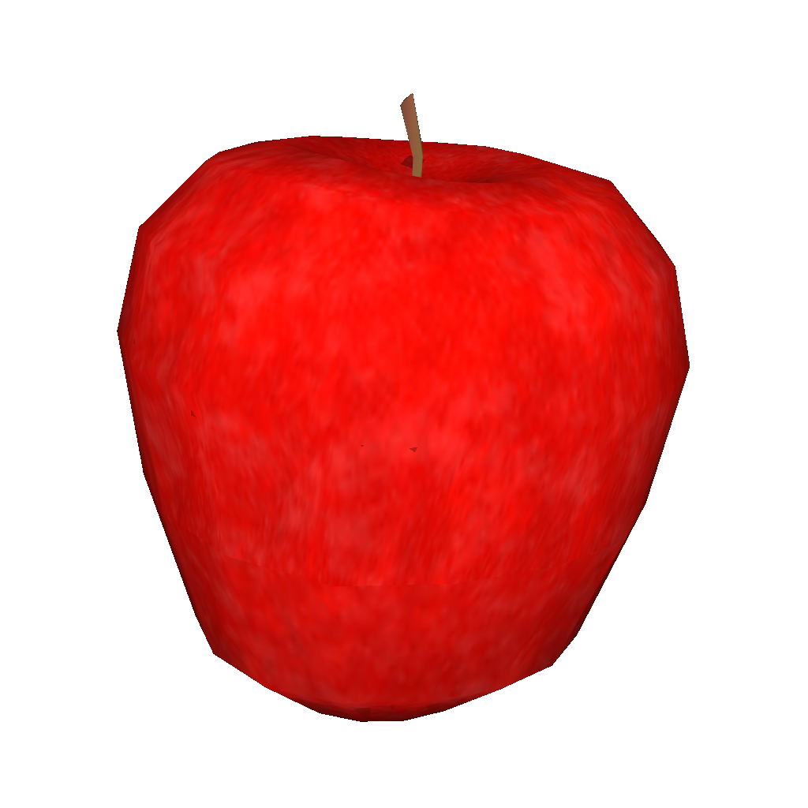
Transfer to unseen objects · 64 → 144 tasks
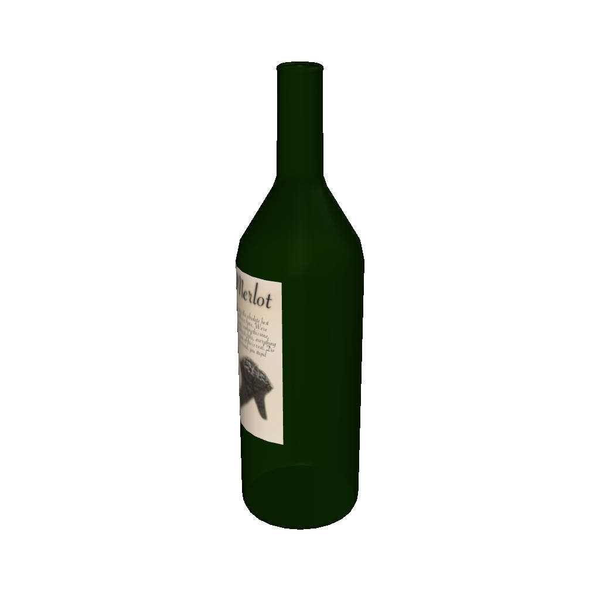
Wine bottle
Similar shapes added at 144 tasks
No close shape match among the added objects
Choose an unseen object
BoN improves most on atomizers and wine bottles from 64 to 144 tasks. Both share upright, bottle-like shapes with the newly added salt shakers and soap dispensers. The other evaluated objects have no close shape match among these additions and show little additional improvement. This pattern suggests that BoN transfers across similar object shapes.

BibTeX
@misc{korniak2026generalist,
title = {Reinforcement Learning Enables Scaling Generalist Robot Policy Improvement},
author = {Michal Korniak and
Marco Bagatella and
Ralf Römer and
Michal Nauman and
Yarden As and
Pranav Vignesh and
Manan Agarwal and
Leander Diaz-Bone and
Piotr Zalewski and
Mikołaj Czarnecki and
Lenart Treven and
Shashwat Saxena and
Sreyas Venkataraman and
Sarvesh Patil and
Zhiyuan Zhou and
Daniel Marta and
Oier Mees and
Nur Muhammad Mahi Shafiullah and
Carmelo Sferrazza and
Bhavya Sukhija and
Angela P. Schoellig and
Andreas Krause and
Max Simchowitz and
Andrew Wagenmaker},
year = {2026},
note = {Manuscript submitted to ICLR 2027},
url = {https://lasgroup.github.io/generalist_improvement/}
}